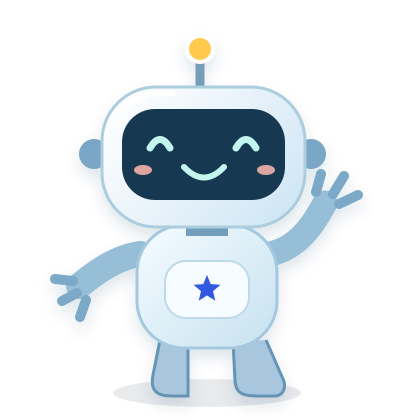
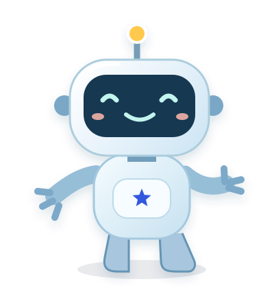

Satu teman. Banyak petualangan.Aiko, siap
Aiko, siap
membantu.
Karakter yang sama, dengan gerakan kecil untuk setiap momen belajar.
SVG & PNG transparan3D dengan 6 gerakan
Hai, aku Aiko!Klik gerakan di bawah untuk mencobanya.

Model 3D sedang disiapkan…
Karakter 2D
Ada pose untuk tiap langkah.
Pilih SVG animasi untuk gerak singkat, atau PNG untuk gambar diam.
Gerakan berhenti sendiri. Pengaturan “kurangi gerakan” pada perangkat dihormati.
Ilustrasi pendamping
SVG + PNGPetunjuk yang mudah dikenali.

Temani, tanpa mengganggu.
Gunakan sapaan saat masuk, buku saat belajar, dan perayaan setelah mengirim tes. Saat anak membaca soal, gunakan pose diam.
Buka panduan & contoh pemasangan ↗